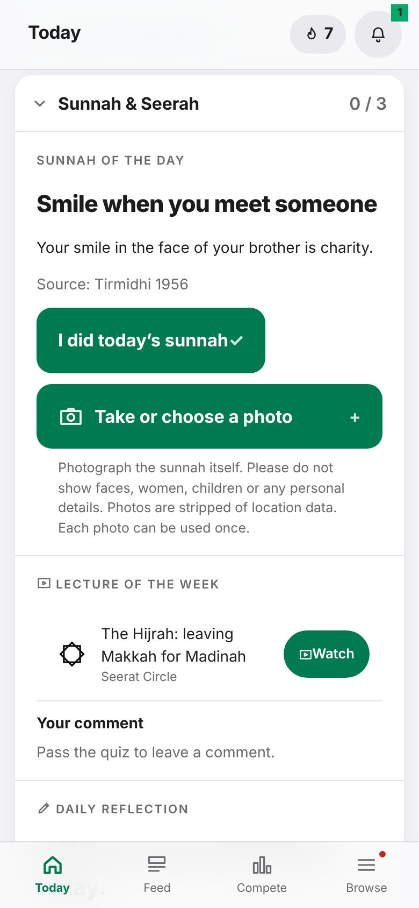
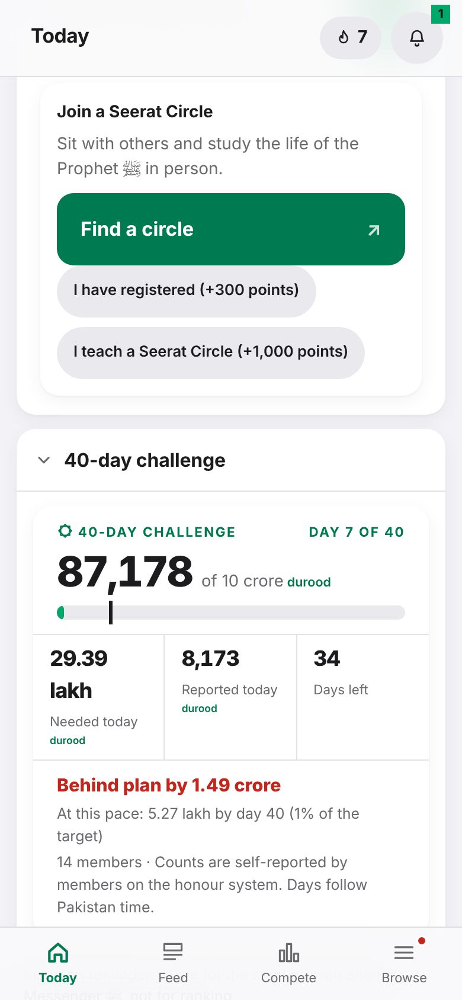
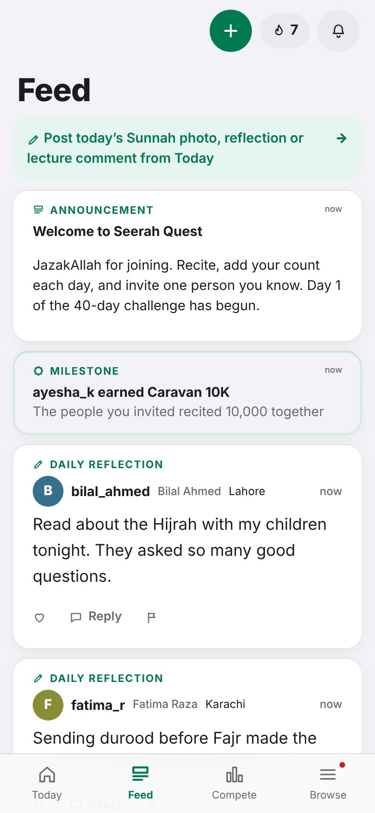

Every day · Tutorial 7 of 13 · 4 min
Sunnah, lectures and reflections
Do the Sunnah of the day, watch the weekly Seerah lecture, write a reflection and read the Feed.
Durood comes first. Next to it, Seerah Quest helps you live one Sunnah a day and learn the life of the Prophet ﷺ. All of it is under Sunnah & Seerah on Today.
The Sunnah of the day
Read today's Sunnah, with its source.
When you have done it, tap I did today's sunnah (20 points).
If you like, tap Take or choose a photo, check the picture and tap Post (40 more points). It appears in the Feed.

Photograph the Sunnah itself. Please do not show faces, women, children or any personal details. The app removes location data from photos. Each photo can be used only once.
The lecture of the week
- Under Lecture of the week, tap Watch. The video opens in the app.
- Keep watching: a timer shows how much is left before you can claim.
- Answer the short question(s) below the video and tap Check answers. Wrong? Watch again and retry: there is no limit.
- Tap Claim reward (150 points). Now you can also write one comment on the lecture (20 points).
Your daily reflection
Under Daily reflection, write one short thought for today (up to 280 characters, no links) and tap Post. One a day, 15 points.
Join a Seerat Circle
Seerat Circles are groups that meet in person to study the Seerah. Tap Find a circle to see where to sign up.
Once you have registered, tap I have registered (300 points and the Circle Member badge).
Do you teach a circle? Tap I teach a Seerat Circle. An organiser confirms it, then you get 1,000 points.

The Feed
Tap Feed at the bottom. You see organisers' news, members' reflections, Sunnah photos and lecture comments, and milestones like a caravan reaching 10,000.
- Like a post (the heart) to encourage someone.
- Reply in up to 140 characters, 3 replies per post.
- Say MashaAllah on a caravan mate's milestone.
- See something wrong? Tap the flag to report it. After three reports it is hidden until an organiser checks it.

You post from Today, not from the Feed. The Feed is for reading.